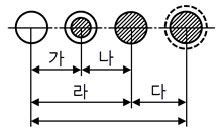
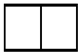
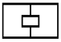
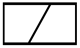
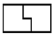
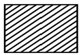
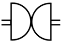
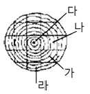

실내건축기능사 (2001-10-14 기출문제)
1과목: 실내디자인
1. 석고 플라스터에 대한 설명으로 틀린 것은?
- 내수성과 점성이 크다.
- 소석고 플라스터는 경화와 건조가 느리다.
- 균열이 없으므로 여물을 사용할 필요가 없다.
- 경석고 플라스터는 철류와 접촉하면 녹슬게 된다.
(정답률: 29%)

2. 도면의 치수기입 방법으로 옳지 않은 것은?
- 치수의 기입은 원칙적으로 치수선에 따라 도면에 평행하게 쓴다.
- 치수는 아래로부터 위로, 또는 왼쪽에서 오른쪽으로 읽을 수 있도록 한다.
- 치수는 치수선 아랫부분에 기입하거나, 치수선을 중단하고 선의 중앙에 기입하기도 한다.
- 치수를 기입할 여백이 없을 때에는 인출선을 그어 수평선을 긋고 그 위에 치수를 기입한다.
(정답률: 78%)
3. 같은 층에서 높이 차를 두는 바닥에 관한 설명으로 옳지 않은 것은?
- 칸막이 없이 공간 구분을 할 수 있다.
- 심리적인 구분감과 변화감을 준다.
- 안전에 유념해야 한다.
- 연속성을 주어 실내를 더 넓어 보이게 한다.
(정답률: 74%)
4. 목재의 제재 시 침엽수의 취재율은 얼마인가?
- 40%
- 50%
- 60%
- 70%
(정답률: 10%)
5. 설계도면이 갖추어야 할 요건 중에서 옳지 않은 것은?
- 객관적으로 이해되어야 한다.
- 일정한 규칙과 도법에 따라야 한다.
- 정확하고 명료하게 합리적으로 표현되어야 한다.
- 모든 도면의 축척은 통일되어야 한다.
(정답률: 74%)
6. 시멘트가 풍화하는데 제일 먼저 영향을 주는 것은?
- 일산화탄소
- 아황산가스
- 분진
- 습기
(정답률: 48%)
7. 슬럼프 테스트란 무엇을 측정하기 위한 시험인가?
- 철근의 인장강도
- 철근의 휨강도
- 콘크리트의 시공연도
- 콘크리트의 압축강도
(정답률: 66%)
8. 내진, 내구적이나 내화적이지 못한 구조는?
- 벽돌구조
- 돌구조
- 철골구조
- 철근콘크리트조
(정답률: 53%)
9. 플랫슬랩(flat slab)구조에 관한 설명 중 틀린 것은?
- 보가 없고 기둥과 슬랩으로만 구성되어 있다.
- 실내공간의 이용도가 좋다.
- 고층건물의 층 높이를 낮게 할 수 있다
- 고정하중이 적고 뼈대강성이 좋다.
(정답률: 22%)
10. 다음 중 쉘구조로 적당한 건축물은?
- 사무소
- 호텔
- 체육관
- 아파트
(정답률: 62%)
11. 개구부에서 고정창의 설명으로 틀린 것은?
- 픽쳐 윈도우(Picture window)는 바닥에서 천정까지 닿는 커다란 창문이다.
- 윈도우 월(Window wall)은 벽면의 일부를 창으로 처리한 것이다.
- 고창(Clearstory)은 천정 가까이에 있는 벽에 위치한 좁고 긴 창문이다.
- 베이 윈도우(Bay window)는 평면이 밖으로 돌출된 형태의 창이다.
(정답률: 25%)
12. 쾌적한 조명을 위한 조건이 아닌 것은?
- 눈부심이 없어야 한다.
- 주변에 적절한 밝기를 유지한다.
- 강한 전반조명을 피하고 부분조명을 부여한다.
- 마감재, 가구 등에 색상이 반대가 되는 조명기구를 설치한다.
(정답률: 72%)
13. 다음 중 안료의 설명으로 틀린 것은?
- 안료는 유색 불투명한 것으로 물, 기름, 일반용제에 녹지 않는 분말상태의 색료이다.
- 안료는 그 자체로서 도막을 만들 수 있다.
- 안료가 들어있는 도료 : 바탕을 은폐하고 불투명한 도막을 구성한다.
- 안료가 들어있지 않은 도료 : 투명한 도막을 구성한다.
(정답률: 44%)
14. 일정한 주기와 진폭을 가진 음을 무엇이라고 하는가?
- 순음
- 소음
- 낙음
- 조음
(정답률: 5%)
15. 호텔의 공간구성에 관한 분류 중 틀린 것은?
- 객실부분
- 관리부분
- 퍼블릭 스페이스
- 조리부분
(정답률: 27%)
16. 황금비(Golden section)의 수치로 옳은 것은?
- 1 : 1
- 1 : 1.414
- 1 : 1.618
- 1 : 3
(정답률: 73%)
17. 플라스틱 건설재료의 장점이 아닌 것은?
- 단위체적의 중량이 극히 경량이나 강도는 높다.
- 제품을 대량으로 생산할 수 있다.
- 내수성이 우수하다.
- 열팽창률이 크다.
(정답률: 50%)
18. 변화감을 주는 요소로 거리가 먼 것은?
- 대비
- 강조
- 운동감
- 대칭
(정답률: 34%)
19. 건축화조명의 특징 중 틀린 것은?
- 조명기구가 보이지 않아 현대적인 감각을 준다.
- 구조상 비용이 적게 든다.
- 발광면이 넓고 눈부심이 적다.
- 명랑한 느낌을 준다.
(정답률: 58%)
20. 바닥의 기능에 관한 설명으로 옳지 않은 것은?
- 가구를 배치하는 기준이 된다.
- 공간의 크기를 정한다.
- 공간과 공간을 구분한다.
- 실내공간을 형성한다.
(정답률: 57%)
2과목: 실내환경
21. 다음 중 외벽 모르타르 바탕의 바름 바탕의 보강재로 사용하는 것은?
- 메탈라스
- 와이어메쉬
- 와이어라스
- 코너비드
(정답률: 14%)
22. 수성 페인트의 원료가 아닌 것은?
- 소석고
- 안료
- 지방유
- 접착제
(정답률: 40%)
23. 목재에 관한 기술 중 옳지 않은 것은?
- 열전도율이 크고 뒤틀림이 없다.
- 비중이 작으면서 압축·인장강도가 크다.
- 타 재료에 비하여 손쉽게 가공할 수 있다
- 재질이 부드럽고 탄성이 있고 인체에 대한 접촉감이 좋다.
(정답률: 58%)
24. 목재의 장점을 설명한 것 중 틀린 것은?
- 석재나 금속재에 비해 가공이 쉽다.
- 온도에 의한 변화, 즉 팽창계수가 비교적 적다.
- 목재면에 아름다운 무늬가 있어 외관적으로 장식 효과가 있다.
- 비중이 비교적 큰 편에 속한다.
(정답률: 35%)
25. 설계도면 중 일반도에 속하지 않는 것은?
- 평면도
- 전기설비도
- 배치도
- 단면상세도
(정답률: 67%)
26. 건축구조에서 3가지 요소가 구성되어야 한다. 해당 없는 요소는?
- 아름다움
- 튼튼함
- 사용하기 편리함
- 숙련도
(정답률: 57%)
27. 아스팔트를 가열하지 않고 휘발성 유용제를 가하여 묽게해서 시공하는 것은?
- 컷백 아스팔트(cut-back asphalt)
- 아스팔트 시멘트(asphalt cement)
- 매스틱(mastic) 또는 그라우트(grout)
- 아스팔트 콘크리트(asphalt concrete)
(정답률: 25%)
28. 건축에서 사용되는 척도에 대한 규약으로 옳지 않은 것은?
- 도면에는 척도를 기입하여야 한다.
- 그림(도면)의 형태가 치수에 비례하지 않을 때는 愷NS(No Scale)로 표시한다.
- 사진으로 축소 또는 확대하는 도면에는 그 척도에 의해서 자의 눈금 일부를 기입한다.
- 한 도면에 서로 다른 척도를 사용하였을 경우 척도를 표시하지 않는다.
(정답률: 71%)
29. 다음 그림은 골재의 함수상태를 나타낸 것이다. 그림에서 유효 함수량은?

- 가
- 나
- 다
- 라
(정답률: 40%)
30. 가까운 두 점 간에 생기는 느낌은?
- 공간의 연속성
- 시간의 확대
- 시각적인 착시
- 장력의 발생
(정답률: 44%)
3과목: 실내건축재료
31. 주거공간의 구상을 위해 기능간의 특성과 연계성 등을 조사하여 그림으로 표현한 것은?
- 기능도
- 실시도서
- 시방서
- 등각투상도
(정답률: 59%)
32. 내화 벽돌의 기본 치수는?
- 210×90×60mm
- 230×114×65mm
- 250×150×60mm
- 190×90×57mm
(정답률: 35%)
33. 고강도의 강재나 피아노선과 같은 특수 선재를 사용하여 콘크리트에 미리 압축력을 주어 형성하는 콘크리트는?
- 프리스트레스트 콘크리트
- 진공 콘크리트
- 프리팩트 콘크리트
- 더모 콘
(정답률: 65%)
34. 설계의 진행과정으로 적당한 것은?
- 설계자의 요구분석 - 각종 자료분석 - 기본설계 - 대안제시 - 실시설계
- 설계자의 요구분석 - 기본설계 - 각종 자료분석 - 기본설계 - 실시설계
- 설계자의 요구분석 - 기본설계 - 각종 자료분석 - 실시설계 - 대안제시
- 기본설계 - 설계자의 요구분석 - 각종 자료분석 - 실시설계 - 대안제시
(정답률: 63%)
35. 내력벽의 개구부 모서리에 빗방향으로 배근한 보강근은 얼마 이상의 철근을 배치하는가?
- D6
- D10
- D13
- D19
(정답률: 36%)
36. 쪽매의 종류에서 딴혀쪽매의 그림으로 맞는 것은?




(정답률: 61%)
37. 석재를 인력으로 가공할 때 표면이 가장 거친 것에서 고운 것으로 바르게 나열한 것은?
- 혹두기 → 도드락다듬 → 정다듬 → 잔다듬 → 물갈기
- 혹두기 → 정다듬 → 잔다듬 → 도드락다듬 → 물갈기
- 정다듬 → 혹두기 → 도드락다듬 → 잔다듬 → 물갈기
- 혹두기 → 정다듬 → 도드락다듬 → 잔다듬 → 물갈기
(정답률: 56%)
38. 실내공간의 동선에 관한 설명으로 잘못 기술된 것은?
- 동선이 짧으면 효율적이지만 공간의 성격에 따라 길게 처리하기도 한다.
- 동선이란 사람이나 물건이 움직일 선을 연결한 것이다.
- 직선형, 방사형, 나선형, 격자형 등으로 분류할 수 있다.
- 성격이 다른 동선일지라도 교차시켜 계획하는 것이 바람직하다.
(정답률: 67%)
39. 리벳이나 볼트의 중심간 거리를 나타낸 말은?
- 게이지 라인
- 게이지
- 클리어런스
- 피치
(정답률: 34%)
40. 조적조 내력벽의 기초는 어느 것으로 하는가?
- 독립기초
- 복합기초
- 온통기초
- 줄기초
(정답률: 38%)
41. 그림과 같은 재료구조 표시기호는?

- 목재치장재
- 석재
- 인조석
- 지반
(정답률: 62%)
42. 다음 평면표시기호는 무엇을 의미하는가?

- 자재문
- 망사문
- 회전문
- 여닫이문
(정답률: 62%)
43. 디자인 요소로서의 선에 대한 설명 중 바르지 못한 것은?
- 수평선 - 안정감, 차분함, 편안한 느낌을 준다.
- 수직선 - 심리적 엄숙함과 상승감의 효과를 준다.
- 사선 - 경직된 분위기를 부드럽고 유연하게 해준다.
- 곡선 - 우아하며 흥미로운 느낌을 준다.
(정답률: 72%)
44. 목재 또는 식물질을 파쇄하여 충분히 건조시킨 후 합성수지와 같은 유기질의 접착제를 첨가하여 열압하여 만든 판은?
- 파티클보드
- 목재집성재
- 경질섬유판
- 인조목재
(정답률: 58%)
45. 아래 그림과 같은 목재의 제재계획 중 4면 곧은결이 나오는 곳은?

- 가
- 나
- 다
- 라
(정답률: 25%)
46. 다음 중 가구식구조로 옳은 것은?
- 벽돌구조
- 나무구조
- 철근콘크리트구조
- 철골철근콘크리트구조
(정답률: 64%)
47. 실내디자인에서 가장 중요하게 고려해야 하는 요인은?
- 물적자원 능력
- 외부환경과 기후
- 거주인에 대한 이해
- 인적자원과 노동력
(정답률: 75%)
48. 금속의 부식을 막기 위한 설명으로 틀린 것은?
- 금속표면을 화학적으로 처리한다.
- 부분적으로 녹이 나면 즉시 제거한다.
- 다른 종류의 금속을 서로 잇대어 사용한다.
- 표면을 깨끗하게 하고 물기나 습기가 없게 한다.
(정답률: 73%)
49. 건축구조의 분류 중 구조재료에 따른 분류가 아닌 것은?
- 목구조
- 철근콘크리트조
- 철골조
- 조적식구조
(정답률: 56%)
50. 목재의 강도에 대한 설명으로 옳은 것은?
- 목재의 강도는 가력방향과는 관계가 없이 같다.
- 섬유 포화점내에서는 함수율이 크면 강도가 크다.
- 목재는 비중의 차이에 따라 강도가 달라지며, 변재가 심재보다 강도가 크다.
- 옹이의 정도에 따른 강도의 저하는 산옹이, 죽은옹이, 썩은옹이, 빠진옹이 순으로 나타난다.
(정답률: 35%)
4과목: 건축일반
51. 바람직한 디자인의 상태는?
- 형태와 기능의 어느 한쪽에도 치우치지 않고 조화롭게 잘 갖추어진 상태이다.
- 형태를 강조하여 아름답게 디자인한 상태이다.
- 기능위주의 편리함에 중점을 두어 디자인한 상태이다.
- 제작자의 개인적 취향을 강조하여 독창성을 표현한 상태이다.
(정답률: 50%)
52. 선의 설명 중 틀린 것은?
- 점의 집합체
- 상대적인 존재
- 점의 운동 궤적
- 방향에 따른 감각의 차이가 없음
(정답률: 71%)
53. 철골구조에서 극장, 영화관 등에 적당한 구조형식은?
- 트러스구조
- 라아멘구조
- 아아치
- 합성뼈대
(정답률: 19%)
54. 어떤 지방의 주간 시수는 12시간, 일조 시수는 8시간일 경우 그 지방의 일조율은 얼마 정도인가?
- 33%
- 40%
- 67%
- 150%
(정답률: 56%)
55. 체감에 영향을 미치는 환경요소가 아닌 것은?
- 기온
- 습도
- 기류
- 증발
(정답률: 60%)
56. 다음 중 서로 잘못 짝지어진 것은?
- 자기 – 모자익타일
- 석기 - 클링커타일
- 도기 – 기와
- 토기 - 벽돌
(정답률: 27%)
57. 시멘트의 조성 화합물 중 재령 28일 이후의 강도를 지배하는 것은?
- 규산 삼칼슘
- 규산 이칼슘
- 알루민산 삼칼슘
- 알루민산철 사칼슘
(정답률: 56%)
58. 쾌적한 실내환경을 만들기 위한 공기조화 계획과 관계가적은 것은?
- 실의 용도
- 개구부의 면적
- 실의 수용인원
- 벽의 마감재료
(정답률: 50%)
59. 가장 용융하기 어려우며 이화학용 내열기구로 이용되는 유리는?
- 소다석회유리
- 칼륨석회유리
- 칼륨납유리
- 붕규산유리
(정답률: 25%)
60. 처마도리와 깔도리에 관한 기술 중 틀린 것은?
- 절충식 지붕틀에서 깔도리와 처마도리는 평보의 위아래에 있다.
- 기둥과 같은 크기나 춤이 다소 높은 것을 사용한다.
- 처마도리는 평보위에 깔도리와 같은 방향으로 걸쳐댄다.
- 평보와는 걸침턱맞춤으로 한다.
(정답률: 16%)